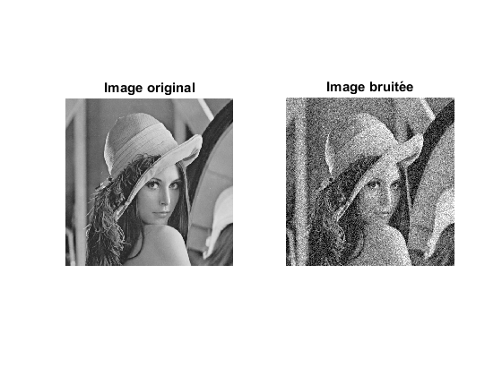
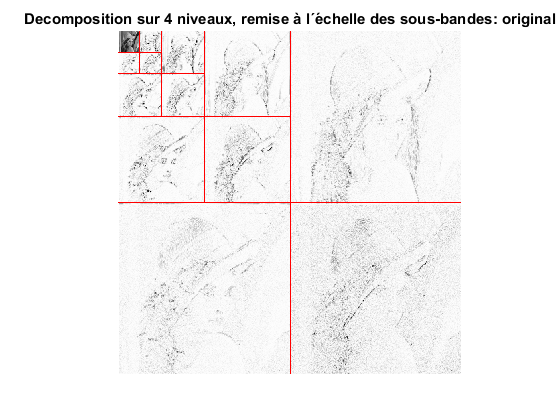
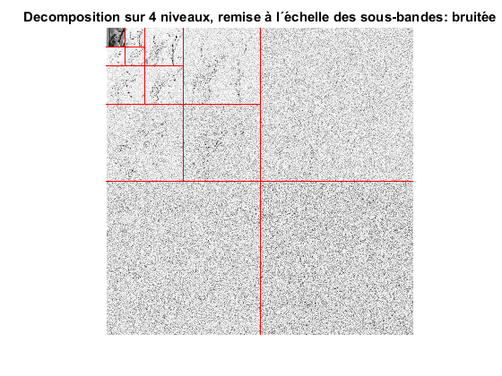
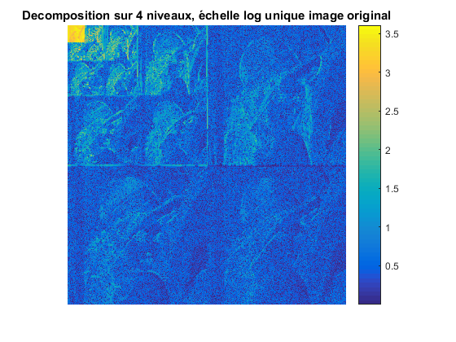
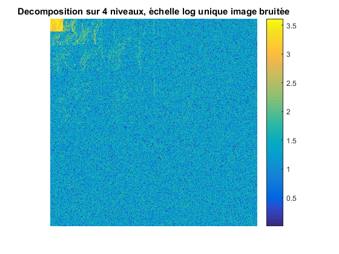
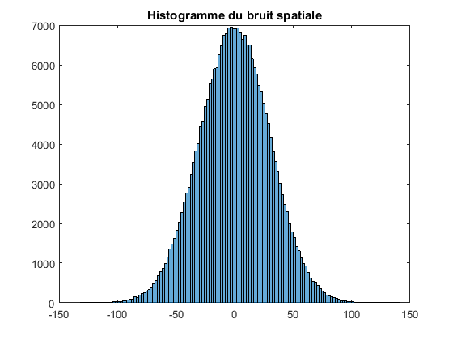
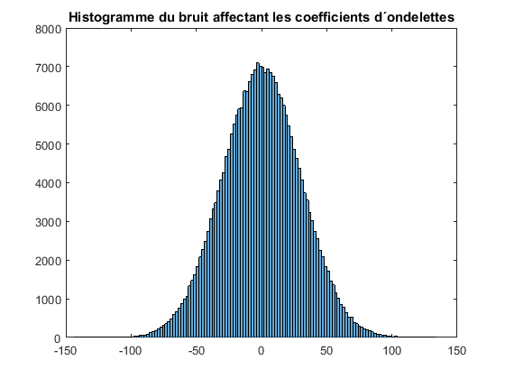
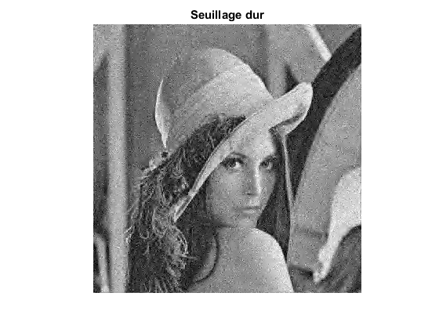
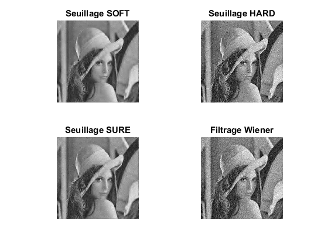

TP3- SIGMA 201B- DÉBRUITAGE
Contents
- Charger une image
- Création du filtre et calcul de la transformée en Ondelettes
- Histogrammes des bruits
- Commentaire
- SNR dans les sousbandes et dans l'image original
- Commentaire
- Débruitage- Seuillage SOFT
- Débruitage- Seuillage HARD
- Seuillage SURE
- Filtrage de Wiener
- Comparison entre les seuillages
- Commentaire
- Performance des méthodes en utilisant un écart-type estimé
- Commentaire
close all; clear
Charger une image
x= double(imread('lena.pgm')); sz=size(x); bruit= 30*randn(sz); xb=x+bruit; %Affichage figure(); subplot(1,2,1) image(uint8(x)); axis image; colormap(gray(256)); axis off; title('Image original') subplot(1,2,2); image(uint8(xb)); axis image; colormap(gray(256)); axis off; title('Image bruitée')
Création du filtre et calcul de la transformée en Ondelettes
qmf = MakeONFilter('Daubechies', 8); % Calcul de la transformée en ondelette discrete (périodisation) nDecLev = 4; % Nombre de niveaux de décomposition imSizeLog = log2(size(x,1)); X_TO = FWT2_PO(x,imSizeLog-nDecLev,qmf); % L=imSizeLog-nDecLev; dans ce cas, L vaut 5. X_TB = FWT2_PO(xb,imSizeLog-nDecLev,qmf); % Affichage transformée en ondelettes image original figure() wt_view(X_TO, nDecLev); title(sprintf('Decomposition sur %d niveaux, remise à l´échelle des sous-bandes: original',nDecLev)); % Affichage transformée en ondelettes image bruitée figure(); wt_view(X_TB, nDecLev); title(sprintf('Decomposition sur %d niveaux, remise à l´échelle des sous-bandes: bruitée',nDecLev)); % Affichage avec échelle globale figure() ; imagesc(log10(abs(X_TO)+1)); axis image; axis off; colorbar; title(sprintf('Decomposition sur %d niveaux, échelle log unique image original',nDecLev)); % Affichage avec échelle globale figure(); imagesc(log10(abs(X_TB)+1)); axis image; axis off; colorbar; title(sprintf('Decomposition sur %d niveaux, échelle log unique image bruitée',nDecLev));   
Histogrammes des bruits
figure() histogram(bruit(:)) %Histogramme du bruit ajouté title('Histogramme du bruit spatiale'); bruitTO=X_TB-X_TO; moyenBT=mean(bruitTO(:)); ecartBT=std(bruitTO(:)); figure() histogram(bruitTO(:)) title('Histogramme du bruit affectant les coefficients d´ondelettes'); 
Commentaire
On observe que les deux histogrammes correspondent à la même distribution. C'est à dire, après transformation, le bruit reste gaussien de moyenne nulle et écart-type de 30 environ (on l'a vérifié en calculant la moyenne et l'écart type empiriques de l'image transformée). Cela peut s'expliquer à partir du fait que la transformation en ondelettes est une transformation orthogonale, et donc préserve les propietés du signal original.
SNR dans les sousbandes et dans l'image original
for i=1:3*nDecLev+1 sousbO = getsb(X_TO, i, nDecLev); sousbB= getsb(X_TB, i, nDecLev); bruit=sousbB-sousbO; varb=var(bruit(:)); coeffim2=sousbB.^2; SNR(i)=10*log10(mean(coeffim2(:))/varb); end disp('Le SNR qu´on obtient pour chaque sous bande c´est:') SNR coeffim2=xb.^2; varb=var(xb(:)); SNRspatial=10*log10(mean(coeffim2(:))/varb); disp('Le SNR qu´on obtient pour l''image c''est:') SNRspatial
Le SNR qu´on obtient pour chaque sous bande c´est:
SNR =
Columns 1 through 7
36.8012 10.7335 15.6601 9.7303 4.2858 7.9003 3.5548
Columns 8 through 13
0.9510 2.1546 0.5645 0.1143 0.3035 0.0497
Le SNR qu´on obtient pour l'image c'est:
SNRspatial =
7.6205
Commentaire
On constate que le SNR (exprimé en dB) diminue en augmentant la sousbande d'approximation et tend vers zero. Cela implique que le rapport signal sur bruit tends vers 1: en augmentant les sousbandes d'approximation, il y a un grand nombre de coefficients qui deviennent zero, et il ne reste que du bruit dans la sousbande. C'est pour ce que la puissance de l'image contenue dans la sousbande et du bruit deviennent égales.
Par rapport au SNR de l'image, on constate que celui dans les premières sousbandes d'approximation est plus élévée.
Débruitage- Seuillage SOFT
jmax=nDecLev; K= imSizeLog; Km= K*(1-4^(-jmax)); seuilU=30*sqrt(2*log(Km)); imThreshT=SoftThresh(X_TB, seuilU); approximation=getsb(X_TB, 1, nDecLev); for i=1:size(approximation,1); for j=1:size(approximation,2); imThreshT(i,j)=approximation(i,j); end end imdebruiteeS=IWT2_PO(imThreshT,imSizeLog-nDecLev,qmf); % figure(); wt_view(imThreshT, nDecLev); figure(); image(uint8(imdebruiteeS)); axis image; colormap(gray(256)); axis off; title('Seuillage doux'); EQMS=mean((x(:)-imdebruiteeS(:)).^2); disp('L''erreur quadratique moyen qu''on obtient c''est') EQMS
L'erreur quadratique moyen qu'on obtient c'est EQMS = 132.9633
Débruitage- Seuillage HARD
imThreshT=HardThresh(X_TB, seuilU); approximation=getsb(X_TB, 1, nDecLev); for i=1:size(approximation,1); for j=1:size(approximation,2); imThreshT(i,j)=approximation(i,j); end end imdebruiteeH=IWT2_PO(imThreshT,imSizeLog-nDecLev,qmf); % figure(); wt_view(imThreshT, nDecLev); figure(); image(uint8(imdebruiteeH)); axis image; colormap(gray(256)); axis off; title('Seuillage dur'); EQMH=mean((x(:)-imdebruiteeH(:)).^2); disp('L''erreur quadratique moyen qu''on obtient c''est %d') EQMH
L'erreur quadratique moyen qu'on obtient c'est %d EQMH = 290.0686
Seuillage SURE
y=(1/30)*X_TB; imThreshT1=HybridThresh(y(:)'); imThreshT=reshape(imThreshT1, size(x)); approximation=getsb(y, 1, nDecLev); for i=1:size(approximation,1); for j=1:size(approximation,2); imThreshT(i,j)=approximation(i,j); end end imdebruiteeSU=IWT2_PO(30*imThreshT,imSizeLog-nDecLev,qmf); % figure(); wt_view(imThreshT, nDecLev); figure(); image(uint8(imdebruiteeSU)); axis image; colormap(gray(256)); axis off; title('Seuillage SURE'); EQMSU=mean((x(:)-imdebruiteeSU(:)).^2); disp('L''erreur quadratique moyen qu''on obtient c''est') EQMSU
L'erreur quadratique moyen qu'on obtient c'est EQMSU = 128.1678

Filtrage de Wiener
imdebruiteeW= wiener2d(xb, 30);
EQMSW=mean((x(:)-imdebruiteeW(:)).^2);
disp('L''erreur quadratique moyen qu''on obtient c''est')
EQMSW
L'erreur quadratique moyen qu'on obtient c'est EQMSW = 276.1079
Comparison entre les seuillages
figure() subplot(2,2,1) image(uint8(imdebruiteeS)); axis image; colormap(gray(256)); axis off; title('Seuillage SOFT'); subplot(2,2,2); image(uint8(imdebruiteeH)); axis image; colormap(gray(256)); axis off; title('Seuillage HARD'); subplot(2,2,3) image(uint8(imdebruiteeSU)); axis image; colormap(gray(256)); axis off; title('Seuillage SURE'); subplot(2,2,4) image(uint8(imdebruiteeW)); axis image; colormap(gray(256)); axis off; title('Filtrage Wiener');
Commentaire
% Par rapport aux autres méthodes de débruitage, c'est le seuillage dur % celui qui a l'erreur quadratique moyen le plus haut, et celui qui % préserve plus le bruit en terms visuels. La méthode qui a la meilleure % performance c'est cela qui utilise le seuillage SURE pour faire le % débruitage, car on obtient en l'appliqant l'erreur quadratique moyen le % plus bas. % La seule méthode qui a une performance plus faible que cela du filtrage % de Weiner c'est le seuillage dur (en terms visuels et d'erreur % quadratique moyen aussi).
Performance des méthodes en utilisant un écart-type estimé
plusfinesb=getsb(X_TB, 3*nDecLev+1, nDecLev); sigma=(1/0.6745)*median(abs(plusfinesb(:))); % sigma=std(x(:)); seuilU=sigma*sqrt(2*log(Km)); imThreshT=SoftThresh(X_TB, seuilU); approximation=getsb(X_TB, 1, nDecLev); for i=1:size(approximation,1); for j=1:size(approximation,2); imThreshT(i,j)=approximation(i,j); end end imdebruiteeS=IWT2_PO(imThreshT,imSizeLog-nDecLev,qmf); % figure(); wt_view(imThreshT, nDecLev); figure(); image(uint8(imdebruiteeS)); axis image; colormap(gray(256)); axis off; title('Seuillage doux'); EQMS=mean((x(:)-imdebruiteeS(:)).^2); disp('L''erreur quadratique moyen qu''on obtient avec le seuillage doux c''est') EQMS % Débruitage- Seuillage HARD imThreshT=HardThresh(X_TB, seuilU); approximation=getsb(X_TB, 1, nDecLev); for i=1:size(approximation,1); for j=1:size(approximation,2); imThreshT(i,j)=approximation(i,j); end end imdebruiteeH=IWT2_PO(imThreshT,imSizeLog-nDecLev,qmf); % figure(); wt_view(imThreshT, nDecLev); figure(); image(uint8(imdebruiteeH)); axis image; colormap(gray(256)); axis off; title('Seuillage dur'); EQMH=mean((x(:)-imdebruiteeH(:)).^2); disp('L''erreur quadratique moyen qu''on obtient avec le seuillage dur c''est %d') EQMH % Seuillage SURE y=(1/sigma)*X_TB; imThreshT1=HybridThresh(y(:)'); imThreshT=reshape(imThreshT1, size(x)); approximation=getsb(y, 1, nDecLev); for i=1:size(approximation,1); for j=1:size(approximation,2); imThreshT(i,j)=approximation(i,j); end end imdebruiteeSU=IWT2_PO(sigma*imThreshT,imSizeLog-nDecLev,qmf); % figure(); wt_view(imThreshT, nDecLev); figure(); image(uint8(imdebruiteeSU)); axis image; colormap(gray(256)); axis off; title('Seuillage SURE'); EQMSU=mean((x(:)-imdebruiteeSU(:)).^2); disp('L''erreur quadratique moyen qu''on obtient avec le seuillage SURE c''est') EQMSU %Wiener imdebruiteeW= wiener2d(xb, sigma); EQMSW=mean((x(:)-imdebruiteeW(:)).^2); disp('L''erreur quadratique moyen qu''on obtient c''est') EQMSW figure(); image(uint8(imdebruiteeW)); axis image; colormap(gray(256)); axis off; title('Filtrage Wiener');
L'erreur quadratique moyen qu'on obtient avec le seuillage doux c'est EQMS = 133.2951 L'erreur quadratique moyen qu'on obtient avec le seuillage dur c'est %d EQMH = 286.6336 L'erreur quadratique moyen qu'on obtient avec le seuillage SURE c'est EQMSU = 128.0735 L'erreur quadratique moyen qu'on obtient c'est EQMSW = 273.5584
Commentaire
Dans la section précedante on a utilisé l'estimateur de l'écart-type basé sur la médiane; en régardant la valeur de l'écart-type estimé, on constate que cette valeur es raisonablement proche à celui du vrai écart-type, et pour cette raison la performance des méthodes de débruitage en utilisant l'écart type estimé est bien proche à cela où on avait utilisé la connaisance du vrai écart type (en terms visuels et en terms d'erreur quadratique moyen).